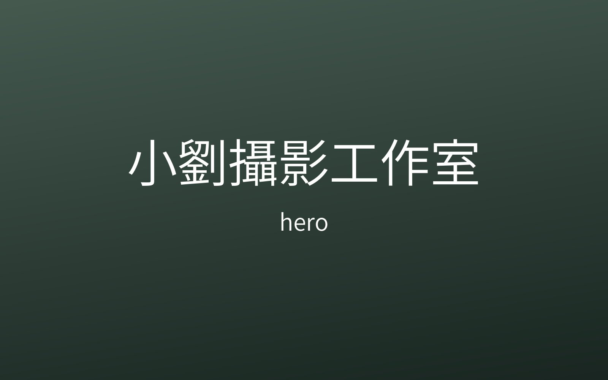
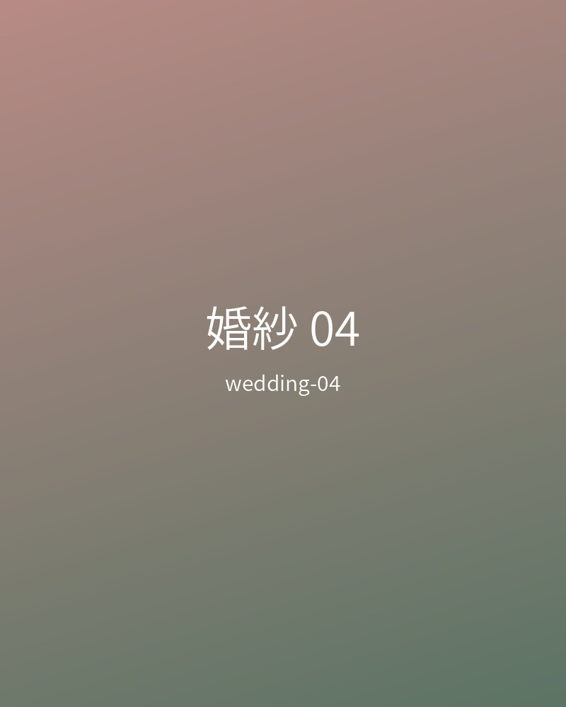
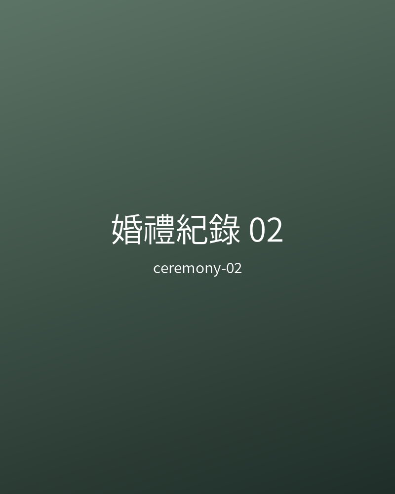
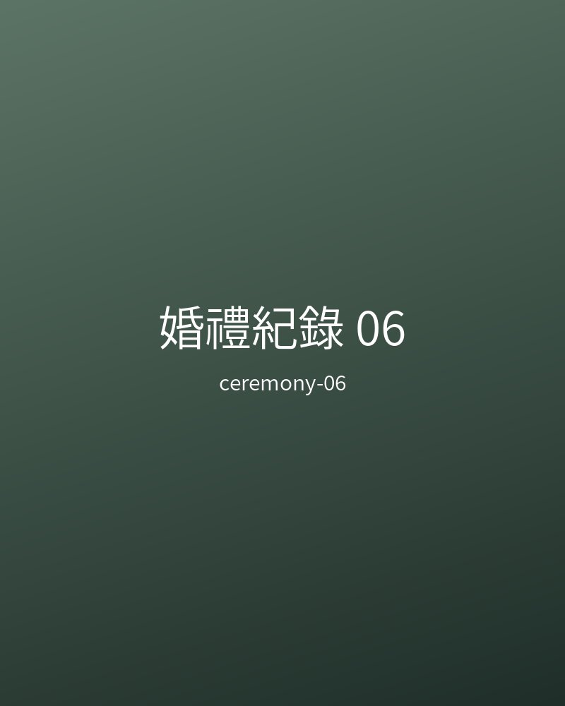
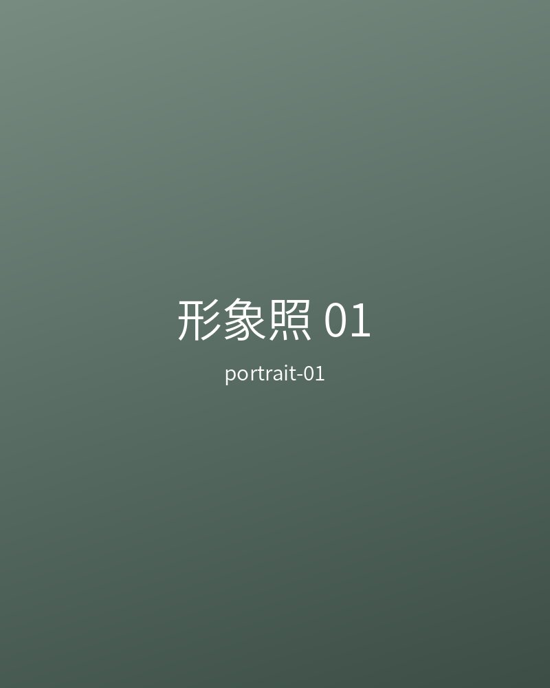
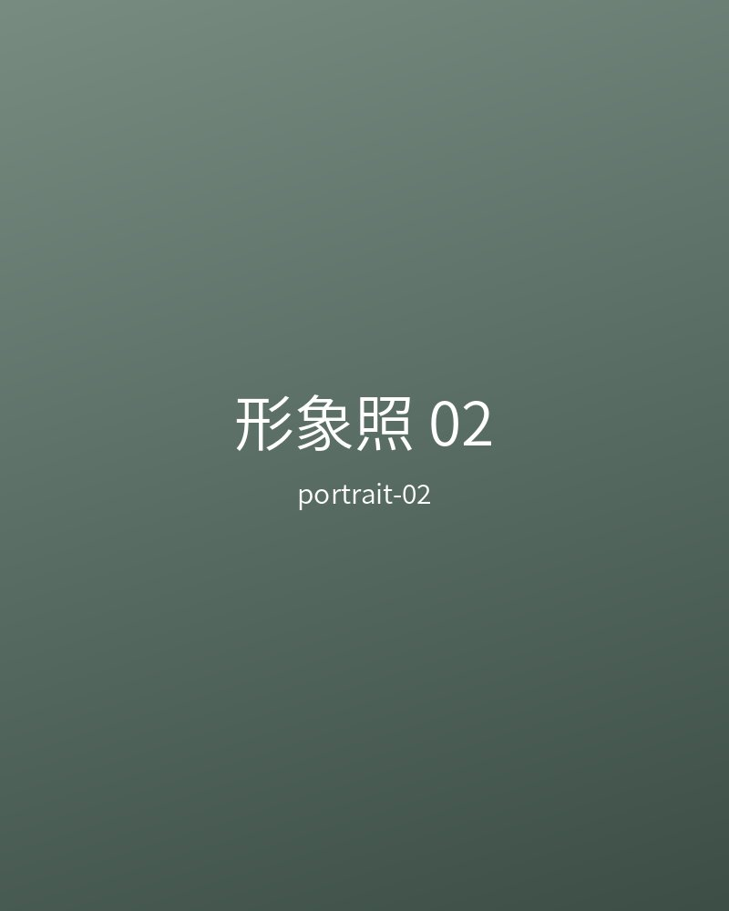
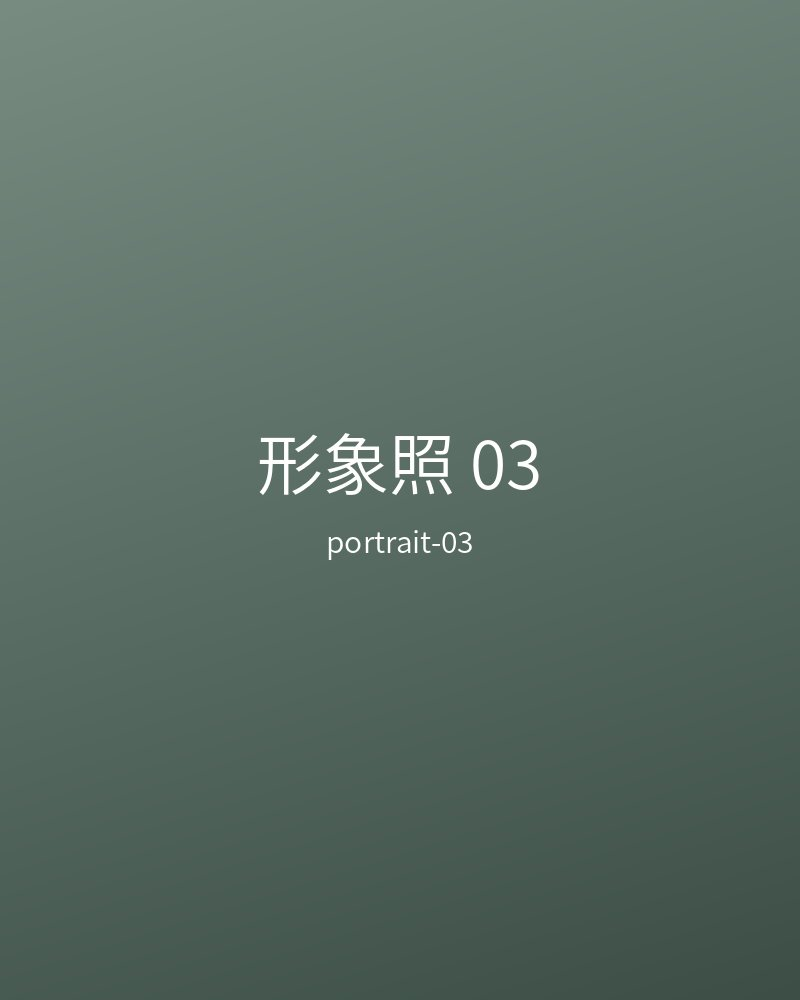
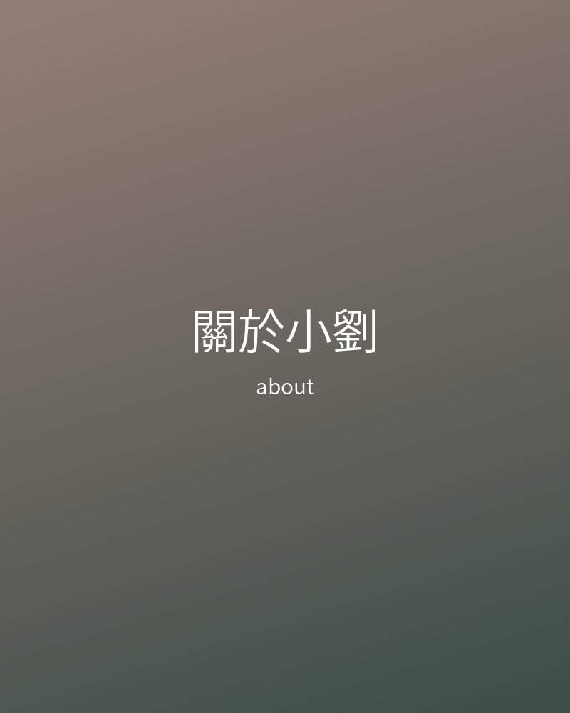

婚紗｜不想擺姿勢的一對新人
- 拍攝情境
- 臺中市區咖啡館與郊外草地，半天行程，以散步與聊天帶出互動。
- 客戶需求
- 害怕鏡頭，希望照片不僵硬、不像雜誌範本。
- 成品方向
- 柔和自然光、低飽和色調，保留笑場與牽手的小動作。

三種拍攝類型，共同的方向是讓你看起來像自己，並留下當天真實的情緒。






每個案例都從「你想留下什麼感覺」開始，再決定地點、光線與拍攝節奏。
以下為價格區間參考，實際報價依日期、地點與需求調整。
NT$ 3,500 – 6,500
NT$ 18,000 – 32,000
NT$ 15,000 – 28,000
從第一次詢問到收到照片，每一步都會讓你知道接下來要做什麼。
填寫表單或私訊，告知類型、日期與地點，確認檔期。
線上討論喜歡的風格、流程與預算，簽署簡易合約。
以輕鬆的對話引導，不過度擺姿勢，留下自然的表情。
調整光線、色調與瑕疵，保留膚質與真實樣貌。
提供雲端相簿下載，並說明保存與使用方式。

我是小劉，在臺中長期拍攝婚紗、婚禮與人像。比起完美的姿勢，我更在意你們彼此看對方的樣子，還有現場安靜下來的那幾秒。
拍攝前我會先聊天，了解你的個性與顧慮；拍攝時用輕鬆的方式引導，讓你自然放鬆；後製只做必要的調整，不改變你原本的樣子。
如果你喜歡自然、真實、有情緒的照片，歡迎來聊聊。
留下資料後，我會在 1 – 2 個工作天內回覆你。